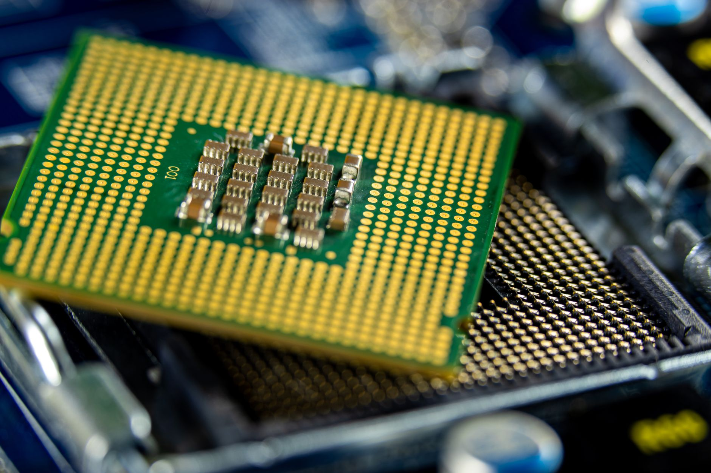

미중 사이 '한국 변수', 균형외교 비용 청구 시작됐다

서울대 국가미래전략원이 최근 '미·중 기술패권 경쟁과 대한민국의 전략' 포럼을 개최했다. 포럼에서는 AI·반도체 분야 미중 충돌이 기술 생태계 양분 구조로 고착화되고 있다고 진단했다. 미국은 엔비디아·AMD AI 반도체의 제3국 수출에 정부 사전 허가 의무화를 추진 중이고, 중국은 갈륨 등 핵심 소재 통제를 확대해 전선을 맞대고 있다.
중국이 한국을 '전략적 균형외교 국가'로 주목하고 있다는 분석이 복수 기관에서 나오고 있다. 한국은 삼성전자·SK하이닉스를 통해 글로벌 DRAM 시장의 약 70%, HBM 시장의 약 90%를 공급하면서도 미중 어느 진영에도 완전히 편입되지 않은 포지션을 유지해 왔다. 미국 AI 업계에서 '한국이 핵심'이라는 평가가 나오는 배경이다.
그러나 균형은 이미 한계에 달하고 있다. 트럼프 행정부의 AI 반도체 수출 허가 의무화가 법제화되면, 한국 팹리스·파운드리는 미국산 EDA 툴·장비 의존도 약 80% 이상을 감안할 때 사실상 미국의 허가 구조 안에 편입될 수밖에 없다. 이 시점에서 중국이 소재 통제 카드를 추가 품목으로 확대할 가능성이 높아진다.
반도체 패권 전쟁을 '21세기 삼국지'로 보면, 한국은 두 강대국이 모두 원하지만 어느 쪽에도 온전히 속하지 못하는 전략 요충지 포지션이다. 중소 소부장 기업의 경우 미국 컴플라이언스 비용과 중국 시장 보호 비용을 동시에 지출하면서 연간 매출의 5~10%를 이중 비용으로 부담하는 사례가 현장에서 나오고 있다.
한국의 균형외교 공간이 좁아지고 있다. 과거에는 경제는 중국·안보는 미국이라는 분리 구조가 유효했지만, AI·반도체에서 기술과 안보가 융합되면서 이 분리가 작동하지 않는다. 반도체 장비 수출통제·AI칩 허가제·소재 수출통제가 모두 기술-안보 복합 이슈로 설계되어 있기 때문이다.
한국이 얻는 단기 이익과 중장기 비용을 구분해야 한다. 지금은 미중 충돌 덕에 한국 반도체·소재 기업이 양측으로부터 동시에 수요를 받는 구간이지만, 진영 선택이 강제되는 순간 양다리는 양쪽에서 동시에 제재를 받는 구조로 역전될 수 있다.
단기적으로는 한국 반도체 소부장 협력사들이 수혜를 본다. 미중 모두 한국 공급망 이탈을 원하지 않아, 삼성전자·SK하이닉스 납품사들은 미국으로부터 IRA 인센티브, 중국으로부터 시장 접근 유지라는 이중 이익 구간에 있다.
외교·연구 분야에서는 서울대 국가미래전략원, KAIST 등 미중 기술패권 분석 인프라를 보유한 기관들이 정부·기업 자문 수요 증가로 수혜를 입는다. 미중 패권 경쟁이 장기화될수록 한국의 전략적 포지션 연구에 대한 글로벌 수요가 커진다.
중국 시장 의존도가 높은 한국 반도체·디스플레이 소재 기업이 직접적 피해를 받는다. 미국 수출 통제 강화로 중국향 첨단 소재 수출이 막히면 중국 내 매출 비중이 30% 이상인 소재 기업들의 수주 목표 하향 조정이 불가피하다.
균형외교 유지 비용은 결국 기업이 부담한다. 정부가 외교 헤징을 유지하는 동안 개별 기업은 미국 컴플라이언스 비용과 중국 시장 보호 비용을 동시에 지출해야 하며, 중소 소부장 기업은 이 이중 비용이 연간 매출의 5~10%에 달하는 구조다.
전략가 관점에서 지금이 진영 선택 유예 기간의 마지막 단계임을 인식해야 한다. 미국 AI 반도체 허가제 법제화와 중국 소재 통제 추가 품목 확대가 맞물리면, 한국 기업들은 어느 공급망에 더 깊이 편입할지를 2026년 전에 결정해야 하는 구조로 몰릴 가능성이 높다.
기업 구매담당자라면 미국 수출관리규정(EAR) 컴플라이언스 체계를 지금 갖춰야 한다. 허가 의무화가 시행되면 한국 기업이 엔비디아 칩을 구매할 때도 용도 소명 자료 제출이 요구될 수 있으며, 내부 수출통제 관리 시스템(ECMS)이 없으면 납기 지연이 발생한다.
개인 투자자는 균형외교 수혜주보다 진영 편입 수혜주에 주목할 시점이다. 미국 공급망에 명확히 편입한 기업(IRA 적격 배터리 소재 공급 계약 체결, 미국 반도체 장비사 JV)이 불확실성 해소 프리미엄을 받는다. 양다리를 걸친 기업은 리스크 프리미엄이 붙는 구간으로 진입하고 있다.
실제 조달 현장에서는 — 미국산 인증과 중국산 배제 확인서를 동시에 요구하는 글로벌 바이어가 2024년 대비 2배 이상 늘었다. 한국 소재 공급사가 이 두 서류를 모두 제출하지 못하면 입찰 자격 자체가 박탈되는 사례가 자동차·방산 분야에서 이미 나오고 있다.
이 포스팅은 쿠팡 파트너스 활동의 일환으로 수수료를 제공받습니다.